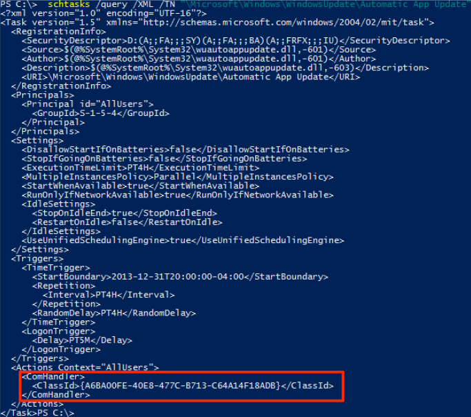

Some scheduled tasks have their action set as "Custom Handler"
You can view the action by pulling the XML
schtasks /query /XML /TN "\Microsoft\Windows\WindowsUpdate\Automatic App Update"

There is a ComHandler associated with the task's action. This means that when the task runs, it reaches out to HKCR:\CLSID\{A6BA00FE-40E8-477C-B713-C64A14F18ADB}\I<SubKey>
and runs whatever DLL is specified

Due to permissions, you can only hijack HKCU unless you have elevated privileges to hijack HKLM
By adding your key and it's subkey and adding our own DLL, the Scheduled Task will run whatever we put there.
You can use Get-ScheduledTaskComHandler to see tasks you can potentially hijack
You can also specify tasks that are set to execute on logon by specifying -OnLogon
You can specify -PersistenceLocations to show only Scheduled Tasks that execute in userland AND start on logon